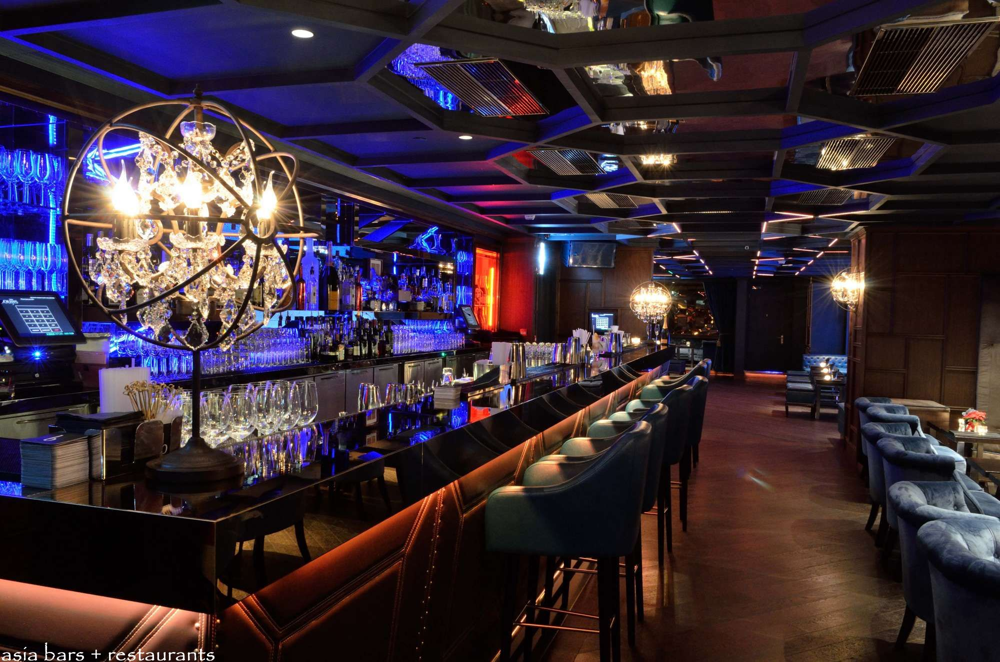
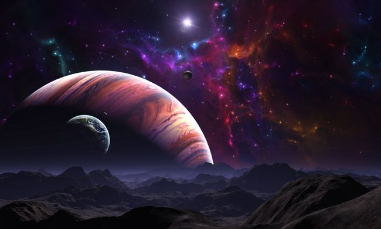

Дуглас Адамс
Ресторан "У конца Вселенной"
Есть теория, согласно которой в том случае, если кто-то точно выяснит, для чего и зачем появилась Вселенная, она тут же исчезнет, и ее заменит нечто другое, еще более бессмысленное и необъяснимое.
Есть другая теория, согласно которой это уже произошло.

У стойки бара Зафод быстро устал. Он устал вдрызг, головы его клевали носами, стукались одна о другую и улыбались не в такт. Он был непристойно счастлив.
— Зафод, — сказал Форд, — пока ты еще можешь говорить, объясни мне, что, кварк побери, случилось? Где ты был? Где мы были? Это, конечно, не очень важно, но все равно хочется выяснить…
Левой голове Зафода удалось приподняться, и мутным взором уставиться на Форда. Правая едва не угодила носом в закуску, прикрыла глаза и погрузилась еще глубже в алькогольное забытье.
— Угу, — сказал Зафод. — Маленькая прогулочка. Хотели, чтобы я нашел того, кто правит Вселенной, но мне не очень хочется с ним встречаться. Боюсь, он не умеет готовить.
Его правая голова приподнялась, внимательно выслушала все, что сказала левое, и изо всех сил кивнула.
— Точ-шно, — сказала она. — Выпьем.
Форд выпил еще один Всегалактический «Мозгобойный» — напиток, который обычно сравнивают с ограблением на улице: обходится дорого, и вызывает сильную головную боль. Что бы там ни случилось, в конце концов решил Форд, сейчас это меня нисколько не волнует.
— Слушай, Форд, — сказал Зафод. — Все круто схвачено.
— В том смысле, что ты контролируешь ситуацию?
— Нет, — сказал Зафод. — Не в том смысле, что я контролирую ситуацию. Тогда бы все не было круто схвачено. Если хочешь знать, давай скажем так: все это дело было у меня в кармане. Ладно?
Форд пожал плечами.
Зафод фыркнул в стакан. Всегалактический «Мозгобойный» выплеснулся через край и начал разъедать мрамор на стойке.
К ним подскочил загорелый космоцыган и принялся пиликать на скрипке, и продолжал действовать им на нервы до тех пор, пока Зафод не дал ему достаточно денег, чтобы он согласился уйти.
Космоцыган направился к Триллиан и Артуру, которые сидели у другого конца стойки.
— Ну и местечко, — сказал Артур. — просто в дрожь бросает.
— Выпей еще, — сказала Триллиан. — Наслаждайся жизнью.
— Что именно? Одно исключает другое.
— Бедный Артур, ты действительно не создан для такой жизни.
— Ты называешь это жизнью?
— А сейчас ты говоришь почти как Марвин.
— Марвин — самый здравомыслящий из всех моих знакомых. Как бы нам отвадить этого скрипача?
К ним подошел официант.
— Ваш столик готов, — сказал он.
Если смотреть на него снаружи, — а это в принципе невозможно — Ресторан похож на огромную сверкающую морскую звезду, разлегшуюся на холодном камне. В ее лучах находятся бары, кухни, генераторы силового поля, которое защищает весь Ресторан и останки планеты, на которой он находится, и Временные Турбины, которые медленно движут все строение вперед и назад вокруг главного момента.
В середине торчит гигантский золотой купол, почти шар, и именно в него сейчас вошли Зафод, Форд, Артур и Триллиан.
По меньшей мере пять тонн сусального золота оказалось там несколько раньше, и им покрыли все, что можно было покрыть золотом. Все, что нельзя было покрыть золотом, усыпали драгоценностями, редкими морскими ракушечками с Сантрагинуса V, подумали, и остальное украсили резьбой, мозаикой, кожей ящерок и мириадами других невообразимых украшений. Стекло сияло, золото блестело, драгоценности сверкали, Артур Дент стоял, открыв рот.
— Ух ты-ы! — сказал Зафод. — Ну дают…
— Вот это да! — выдохнул Артур, — Какие люди…! Какие штучки…!
— Штучки, — заметил Форд Префект, — тоже люди.
— Э-э… люди, —запнулся Артур, — и… еще люди…
— Люстры…! — сказала Триллиан.
— Столы…! — сказал Артур.
— Платья…! — сказала Триллиан.
Официанту пришла в голову мысль, что они похожи на пару поверенных, описывающих имущество новоиспеченного банкрота.
— «Конец Вселенной» очень популярен, — сказал Зафод, и, шатаясь, пошел, едва не сшибая столики, некоторые из мрамора, некоторые из редчайшего ультракрасного дерева, некоторые даже из платины, и за каждым сидели несколько экзотических созданий, которые весело болтали и изучали меню.
— Сюда любят приходить в лучшей одежде, — заметил Зафод. — Чтобы чувствовалось, что это действительно событие.
Столики стояли, почти замыкая круг вокруг сцены в центре зала, на которой небольшой оркестр наигрывал что-то легкое. Их было по меньшей мере тысяча, а между ними шелестели листьями пальмы, звенели фонтаны, стояли ни на что непохожие скульптуры, короче говоря, все то, что присуще всем ресторанам, где решили потратить немного денег на то, чтобы казалось, что денег потрачено неслыханно много. Артур огляделся, почти ожидая, что на сцене кто-то рекламирует Америкэн Экспресс.
Зафод споткнулся, и чуть не упал на Форда, который в ответ чуть не упал на Зафода.
— Ух ты, — сказал Зафод.
— Вот это да, — сказал Форд.
— Видно, прадедушка совсем запудрил мозги нашему компьютеру, — выговорил Зафод. — Я ему говорю — отвези нас в ближайшее место, где можно поесть, а он посылает нас в «Конец Вселенной». Напомните мне, чтобы я однажды сказал ему что-нибудь доброе.
Он помолчал.
— Все здесь. Здесь все, кто хоть кем-то был.
— Был? — спросил Артур.
— В «Конце Вселенной» придется часто говорить в прошедшем времени, сказал Зафод, — потому что все уже случилось. — Привет, ребята, — он помахал сидевшей неподалеку группе игуаноподобных посетителей, — как шли дела?
— Это Зафод Библброкс? — спросила одна игуана другую игуану.
— Вроде бы, — сказала вторая игуана.
— Ну это уж вообще, — сказала первая.
— Смешная штука — жизнь, — сказала вторая.
— Это уж что ты сам с ней сделаешь, — отозвалась первая, и они снова погрузились в молчание. Они дожидались самого грандиозного шоу во Вселенной.
— Стой, Зафод, — вдруг сказал Форд, попытался ухватить Зафода за рукав, но, по причине третьего Всегалактического «Мозгобойного», промахнулся. Он попытался показать на что-то пальцем.
— Вон там мой старый друг, — сказал он. — Жармрак Дезиато! Видишь, у платинового столика, в платиновом костюме.
Зафод попытался повернуться туда, куда указывал Форд, но у него закружилась голова. Наконец, он увидел.
— Ну да, — сказал он. Секундой позже он узнал хозяина платинового костюма.
— Слушай-ка! — сказал он. — Да это же Жармрак Дезиато — суперзвезда! Супергалактика! Суперее, чем любой супер! Кроме меня.
— Кто бы это мог быть? — спросила Триллиан.
— Ты не знаешь Жармрака Дезиато? — Зафод был сражен. — И «Зоны Бедствия» никогда не слышала?
— Нет, — сказала Триллиан, и это было правдой.
— Самая крутая, — объявил Форд, — самая громкая…
— …самая богатая… — подсказал Зафод.
— …рок-группа во всей истории… — Форд поискал верное слово.
— …самой истории, — закончил Зафод.
— Увы, — сказала Триллиан.
— Видишь, — сказал Зафод. — Мы уже в «Конце Вселенной», а ты еще даже и не начала жить. Много потеряла.
Он подвел ее к столику, около которого терпеливо дожидался официант. Артур последовал за ним, чувствуя себя неимоверно одиноким.
Форд протолкался сквозь толпу, и попытался возобновить старое знакомство.
— Мда… э-э… привет, Жармрак, — сказал он, — как дела? Жутко рад видеть тебя, все грохочешь? Выглядишь великолепно, очень-очень потолстел, обрюзг. Просто здорово.
Он хлопнул Жармрака по спине, и был слегка удивлен, не получив никакого ответа. Однако в нем ключом бурлили три Всегалактических «Мозгобойных», и понуждали его продолжать, не обращая на это внимания.
— Помнишь, как, бывало, гуляли, а? — Форд прикрыл глаза. — Бистро «Нелегаль», помнишь? Киношку «Глубокое Горло»? Сексодром на Эротиконе Шесть? Веселое было времечко…
Жармрак Дезиато не высказал определенного мнения по поводу того, было ли то времечко веселым. Форда не проняло.
— А помнишь, когда хотелось есть, мы притворялись инспекторами экологического надзора? Ходили и конфисковали жратву и выпивку. А потом однажды отравились. А помнишь, как ночами сидели в вонючих комнатах над кафе «У Лу» в Гретхентауне, на Новом Бетеле? Ты-то всегда сидел в соседней комнате, и пытался писать песни, и тренькал на своем сигитаре. Как нам не нравились твои сочинения! А ты говорил, что тебе плевать, а мы говорили, что нам плевать, потому что они нам не нравились. — Глаза Форда заволокло счастливыми слезами.
— И ты всегда говорил, что не собираешься становиться звездой, — продолжал Форд, — потому что ненавидишь звездную систему. — Форд с головой погрузился в волны ностальгии. — А ты помнишь, мы тебе сказали тогда Гадра, и Сулиджу, и я, что выбора тебе делать и не придется. А теперь? Ты можешь купить звездную систему!
Он повернулся и призвал сидящих за столиками обратить внимание на Дезиато.
Жармрак Дезиато снова не сделал попытки опровергнуть утверждение Форда.
— Похоже, тут кто-то вдрызг пьян, — пробурчало в свой бокал фиолетовое создание за соседним столиком, формой напоминавшее большой куст.
Форд с трудом удержал равновесие и рухнул на стул напротив Жармрака.
— А сейчас с кем выступаешь? — спросил он и схватился за бутылку для лучшей опоры, что было весьма неразумно, поскольку бутылка немедленно накренилась, и, прежде чем Форду удалось вернуть ее в прежнее положение, близстоящий бокал наполнился более, чем наполовину.
— А тот ваш номер! — продолжал Форд. — Вы все еще делаете его? Бумм! Бумм! Трах тарррарах! — и еще что-то, а на концертах кончается тем, что космический корабль на полном ходу сталкивается со звездой. Все еще обходитесь без голографии?
И Форд изо всех сил стукнул кулаком левой руки в ладонь правой, чтобы объяснить, как именно корабль сталкивается со звездой, и снова уронил бутылку.
— Корабль — жжж! Звезда — и бац в нее! — кричал он. — Какие там лазеры, голография и все такое! Вот где настоящее оформление — солнечные вспышка, и ровный загар девяноста пяти процентов кожи гарантируется. Ну, и музыка тоже ничего…
Его глаза следили за ручейком, струящимся из бутылки. С этим надо что-то сделать, подумал он.
— Хочешь выпить? — спросил он. До его почти полностью отключившегося сознания начинало доходить, что во встрече двух старых друзей чего-то не хватает, чего-то такого, что каким-то образом связано с тем, что тот, кто сидел напротив него в платиновом смокинге и серебряном котелке, еще не сказал «Привет, Форд!» или «Как я рад наконец тебя видеть!», или еще чего-нибудь. Не говоря уже о том, что за все это время он ни разу и глазом не моргнул.
— Жармрак? — сказал Форд.
На его плечо легла большая мясистая рука и оттолкнула его в сторону. Форд неизящно соскользнул со стула, и поднял глаза кверху, чтобы увидеть владельца этой непочтительной конечности. Не увидеть руковладельца не представлялось возможным, поскольку в нем было куда больше двух метров росту, и при этом он не был худ, как большинство высоких людей. Он был не только высок, но и широк — широк, как кожаный диван: блестящий, жесткий, и туго набитый. Костюм, набитый этим телом, выглядел так, словно был создан лишь затем, чтобы показать, с каким трудом он облегает эту груду мышц. Физиономия была шершавая, как апельсин, и ярко-красная, как яблоко; на этом сходство с какими бы то ни было сладостями кончалось.
— Пацан, — прозвучал его голос так, словно из груди, где он отбывал срок, его выпустили только под залог, и только на очень короткое время.
— Слушаю вас, — попытался завязать разговор Форд. Он, шатаясь, поднялся на ноги, и был очень разочарован тем, что его голова приходится слишком низко от пола по сравнению с головой собеседника.
— Отвали, — сказал незнакомец.
— Да? — спросил Форд, думая одновременно, не слишком ли он глуп, чтобы ввязываться в этот разговор. — А ты кто?
Незнакомец подумал над этим вопросом. Ему не часто приходилось отвечать на него. Тем не менее, через некоторое время Форд услышал ответ.
— Я — это тот, кто говорит «Отвали», а потом может и ввалить.
— Слушай, — Форд начинал нервничать. Он пожалел, что его рассудок не может перестать приплясывать и бормотать всякую несуразицу вместо того, чтобы встряхнуться и заняться делом. — Слушай, вот что… — продолжал он. — Мы с Жармраком очень старые друзья, а…
Он взглянул на Жармрака Дезиато, который все еще и пальцем не пошевелил.
— А… — снова сказал Форд, думая, что такое убедительное может следовать за буквой «А».
Великан выдал целое предложение, которое было достаточно убедительным, и начиналось с буквы «А».
— А я телохранитель мистера Дезиато, — сказал он, — и я отвечаю за его тело, а за твое нет, так что забери его отсюда, пока оно не попортилось.
— Нет, подожди, — сказал Форд.
— Чего нет? — взревел телохранитель. — Чего подожди? Мистер Дезиато никого не принимает.
— Ну ладно, но может быть, ты дашь и ему сказать, что он об этом думает?
— Он никого не принимает.
Форд бессильно взглянул на Жармрака и был вынужден признать, что телохранитель, увы, прав. Дезиато не проявил никаких признаков интереса к жизни, не говоря уже об остром интересе к благосостоянию Форда.
— Но почему? — спросил Форд. — Что с ним стряслось?
Телохранитель объяснил.
 Галактический Путеводитель для Путешествующих Автостопом отмечает, что «Зона Бедствия», рок-группа из Рассудных Дней, что на Гагранаке, общепризнанно считается не только самой громкой рок-группой во всей Галактике, но и вообще просто самым громким шумом. Их поклонники едины во мнении, что наилучший аудиоэффект достигается при прослушивании концерта из большого железобетонного бункера, расположенного примерно в полусотне километров от сцены. Сами музыканты во время концертов играют на своих инструментах с помощью дистанционного управления с борта космического корабля, лежащего на орбите вокруг планеты — чаще, правда, вокруг совсем другой планеты.
Их песни в основном очень просты, и своядтся к очень традиционной схеме: мальчик встречает девочку под серебряной луной, а луна потом возьми да и взорвись ни с того ни с сего.
Многие планеты запретили их концерты, некоторые из соображений высокого искусства, а большинство — потому, что работа аудиосистем группы вступала в противоречие с местными договорами по ограничению стратегических вооружений.
Это, тем не менее, не снизило их доходов от дальнейшего расширения границ гиперматематики. Их главный бухгалтер-исследователь не так давно получил титул профессора неоматематики в Максимегалонском университете, в знак признания его заслуг по развитию как общей, так и специальной теорий налогообложения группы «Зоны Бедствия», в которых он доказывает, что ткань пространственно-временного континуума не только изрядно повытерлась, но и вообще лишена основы.
Форд, спотыкаясь, добрался до столика, за которым сидели Зафод, Артур и Триллиан в ожидании начала представления.
— Нужно закусить, — сказал он.
— Ну что, Форд, — сказал Зафод, — поговорил ты с оралой?
Форд странно покрутил головой.
— С Жармраком? Ну… да, вроде как поговорил.
— Что он сказал?
— В общем, немного… Он… того…
— Чего?
— Он умер на год, чтобы уладить проблемы с налогами. Дайте сесть.
Он уселся.
Подошел официант.
— Желаете меню? — спросил он. — Или познакомитесь с Фирменным Блюдом?
— А? — сказал Форд.
— А? — сказал Артур.
— А? — сказала Триллиан.
— Круто, — сказал Зафод. — Давай сюда свой деликатес. Деликатничать с ним мы не будем.
В маленькой комнате в одном из лучей Ресторана некто высокий, худой, и костлявый чуть отодвинул штору на окне и в лицо ему глянуло забвение.
Это лицо не было красивым, возможно, потому, что забвение столько раз глядело в него. Начать с того, что оно было слишком длинным, глаза и щеки слишком глубоко запали, губы были слишком тонкими, и когда они раздвигались, зубы между ними блестели, как только что начищенная каминная решетка. Руки, которые держали штору, тоже были длинные и тонкие. И холодные. Они едва касались складок шторы, и казалось, что если их владелец не будет следить за ними, словно коршун за куропатками, они сами по себе отползут в сторонку, и там сделают что-нибудь, о чем не принято говорить в приличном обществе.
Он опустил штору, и жуткий свет, игравший на его физиономии, отправился поиграть в каком-нибудь месте поздоровее. Он прошелся по своей комнате, словно хищник, вышедший облегчиться, и уселся на стул у столика на трех ножках. Он просмотрел несколько страниц свежих приколов.
Прозвенел звонок.
Он отбросил тонкую пачку листков и встал. Его руки прошлись по отдельным перышкам из миллиона разноцветных перышек, которыми был украшен его пиджак, и он вышел.
В зале Ресторана притушили огня, оркестр убыстрил темп, узкий луч света упал на проход из-за занавеса к сцене в центре зала.
По нему шел некто высокий, худой, костлявый, одетый в радужный пиджак. Он взбежал на сцену, подскочил к микрофону, одним движением тонкой длинной руки выхватил его из стойки и несколько мгновений стоял, кланяясь налево и направо, принимая аплодисменты, и демонстрируя всем присутствующим свою каминную решетку. Он помахал своим близким друзьям в зале — хотя их там не было — и подождал, пока аплодисменты утихнут.
Он поднял руку и улыбнулся. Его улыбка шла не только от уха до уха, но, казалось, еще и выступала за естественные границы его лица.
— Спасибо, дамы и господа! — крикнул он. — Большое спасибо! Благодарю вас.
Он подмигнул.
— Дамы и господа, — сказал он. — Как мы знаем, к настоящему моменту Вселенная существует уже более ста семидесяти тысяч миллионов миллиардов лет, а ее конец настанет через немногим более получаса. Итак, добро пожаловать в Маккосмикс, Ресторан «Конец Вселенной»!
Он махнул рукой, чем вызвал очередной взрыв аплодисментов. Еще раз взмахнув рукой, он оборвал его.
— Я ваш хозяин на сегодня, — сказал он, — меня зовут Макс Квордлиплен.
(Все и так это знали, представления в Ресторане были известны во всей обитаемой Галактике, но он сделал это просто для того, чтобы дать аудитории возможность поаплодировать.)
— Я только что вернулся с самого самого самого что ни на есть противоположного конца времен, куда меня пригласили выступить в Большом Трахбургер-Баре. И это был замечательный вечер, дамы и господа, а сегодня я с вами, и мы вместе будем переживать величайшее событие — Конец Самой Истории!
Взрыв аплодисментов стих, когда свет в зале притушили еще больше. На каждом столике сами собой зажглись свечи, и это вызвало восхищенный вздох всех собравшихся. Они превратили зал в скопление нервных огоньков и дрожащих теней. По залу побежал шепоток, а золотой купол над ними становился все прозрачнее, прозрачнее…
Макс заговорил тише:
— Итак, дамы и господа: — свечи горят, оркестр наигрывает что-то мягкое, и защищенный силовым полем купол медленно тает, и мы оказываемся под небом, полным света набухших звезд. Я предвижу сегодня славный вечерний апокалипсис.
Даже едва слышное треньканье оркестра стихло, когда на публику опустилось облако тяжелого шока при виде того, что еще не все из присутствующих видели.
Чудовищный, мертвенный свет хлынул в зал — жуткий свет, распухший, гноящийся свет, — свет, от которого стошнило бы всех чертей в аду.
Вселенная близилась к концу.
Несколько нескончаемых мгновений Ресторан бесшумно скользил сквозь бушующую пустоту. Затем Макс снова заговорил.
— Специально для тех, кто надеялся увидеть свет в конце туннеля, сказал он. — Вот он!
Оркестр врезал марш.
— Благодарю вас, дамы и господа, — вскричал Макс, — я снова буду с вами через несколько минут, а пока я оставляю вас на милость крайне любезного мистера Рэга Аннигили. Рэг Аннигили и его Катаклизмик-Бэнд! Аплодисменты, дамы и господа, встретим Рэга и мальчиков!
В небесах продолжалась агония Вселенной.
Послышалось несколько неуверенных хлопков, к которым в конце концов присоединился весь зал, и все снова задвигались, и продолжили разговоры. Макс пошел в обход зала, отпуская шуточки, взрываясь смехом, зарабатывая на жизнь.
К Зафоду Библброксу подошло большое жирное четвероногое, отдаленно напоминающее корову, с большими печальными глазами, маленькими рожками, и почти заискивающей улыбкой на губах.
— Добрый вечер, — промычало оно, и тяжело опустилось на корточки. — Я Фирменное Блюдо. Могу ли я предложить вам себя? — Оно тяжело вздохнуло, мирно посмотрело на всех, и поудобнее расставило передние ноги.
Его взгляд встретился со взглядами Артура и Триллиан, полных испуганного недоумения, взглядом Форда Префекта, полным абсолютного спокойствия, и взглядом Зафода Библброкса, полным жгучего голода.
— Может быть, кусочек грудинки? — предложило Фирменное Блюдо. — Тушеной в белом винном соусе?
— Э-э… твоей грудинки? — шепот Артура был звуковым аналогом его взгляда.
— Ну разумеется, моей грудинки, сэр, — укоряюще промычало Фирменное Блюдо. — Чью же еще я вправе предлагать?
Зафод вскочил на ноги и принялся, облизываясь, ощупывать грудинку Фирменного Блюда.
— Окорок тоже очень хорош, — бормотало Блюдо. — Я много двигалось, и хорошо питалось, так что в нем очень много качественного мяса. — Оно мелодично фыркнуло, срыгнуло жвачку, пожевало ее, и снова проглотило.
— Может быть, рагу из вырезки? — добавило оно.
— Ты хочешь сказать, что это животное в самом деле хочет, чтобы мы его съели? — шепотом спросила Триллиан у Форда.
— Я? — удивился Форд. Глаза его полностью остекленели. — Я вообще ничего не хочу сказать.
— Но это же абсолютно ужасно, — вскричал Артур, — никогда не слышал ничего противнее!
— В чем проблема, землянин? — спросил Зафод, перемещая внимание на окорок Блюда.
— Но я не хочу есть животное, которое стоит передо мной, и приглашает меня его съесть, — сказал Артур. — Это жестоко.
— Лучше, чем есть животное, которое не хочет, чтобы его съели, — заметил Зафод.
— Не в том дело, — возразил Артур. Потом он подумал над словами Зафода. — Ладно, — сказал он, — может быть, дело именно в этом. Мне все равно, я не хочу об этом думать сейчас. Я просто… э…
Вселенная корчилась над ними в предсмертнах судорогах.
— Я лучше закажу шпинат, — пробормотал Артур.
— Могу ли я обратить ваше внимание на печень? — спросило животное, она уже должна стать жирной и нежной. Я себя насильно раскармливало последние несколько месяцев.
— Шпинат, — твердо сказал Артур.
— Шпинат? — переспросило животное, неодобрительно уставившись на Артура.
— Ты собираешься сказать мне, что шпинат брать не стоит?
— Что ж, — сказало животное, —я встречало много овощей, мнение которых по этому поводу отличалось от вашего. Именно поэтому решили раз и навсегда покончить с этой запутанной проблемой и вывести животное, которое на самом деле хочет, чтобы его съели, и может четко и ясно сказать об этом. И это я. Оно отвесило очень короткий поклон.
— Стакан воды, пожалуйста, — сказал Артур.
— Слушай, — сказал Зафод, — мы есть хотим, а не спорить по поводу диетических блюд. Четыре больших бифштекса, с кровью, и побыстрее. Мы не ели последние пятьсот семьдесят шесть тысяч миллионов лет.
Фирменное Блюдо с трудом поднялось. Оно мелодично рыгнуло.
— Хороший выбор, сэр, если можно так выразиться. Хорошо, а теперь я пойду и застрелюсь.
Оно повернулось, и дружески подмигнуло Артуру.
— Не волнуйтесь, сэр, — сказало оно. — Я буду очень гуманно.
И неторопливо потрусило в направлении кухни.
Через несколько минут официант подал четыре огромных дымящихся бифштекса. Зафод и Форд вгрызлись в них без всяких колебаний. Триллиан посмотрела на них, пожала плечами, и принялась за свою порцию.
Артур уставился на них, чувствуя, что его подташнивает.
— Землянин, — спросил Зафод, мерзко ухмыляясь той физиономией, которая не была занята поглощением бифштекса, — что тебя гложет?
И оркестр снова врезал марш.
Воздух был полон веселой болтовни, смесью экзотических запахов невиданных растений, изысканной еды и весьма коварных напитков. На бесконечное число миль вокруг бушевал последний космический шторм, готовясь к ошеломляющей кульминации. Взглянув на часы, Макс восторженно выскочил на сцену.
— А теперь, дамы и господа, — сверкнул он своей каминной решеткой, скажите мне, все ли вы прекрасно проводите время?
— Да, — крикнули те, кто всегда кричит «Да», если конфераньсе спрашивает их, хорошо ли они проводят время.
— Отлично, — с энтузиазмом воскликнул Макс, — просто отлично. И сейчас, когда фотонные бури срывают последние облака с красных горячих звезд, готовясь разорвать их на маленькие клочочки, я знаю, что вы готовы насладиться вместе со мной тем, что, я точно знаю, будет нашим самым большим и последним впечатлением.
Он помолчал. И снова блеснул улыбкой.
— Поверьте, дамы и господа, — сказал он, — после этого никаких впечатлений уже не будет.
Он снова сделал паузу. Сегодня он как никогда рассчитал ритм своего выступления. Раз за разом он говорил это, из вечера в вечер. Не то чтобы слово вечер что-то значило сейчас, у конца времен. Сейчас было только бесконечным повторением одного и того же последнего момента, в который Ресторан качнется и рухнет за грань края времени ̵ и вернется обратно. В этот вечер, тем не менее, все шло даже лучше обычного, и аудитория была послушна движениям его болезнненных пальцев. Его голос стал тише. Теперь он почти шептал, и посетителям приходилось напрягаться, чтобы расслышать его.
— Это, — сказал он, — на самом деле абсолютный конец, последняя жуткая катастрофа, в которой исчезает все многообразие творения. Это, дамы и господа, и есть пресловутый Черный День.
Он еще понизил голос. В наступившей тишине муха не осмелилась бы даже кашлянуть.
— После этого, — сказал он, — нет ничего. Пустота. Пропасть. Забвение. Абсолютное ничто…
Его глаза сверкнули — или блеснули?
— Нет ничего… — конечно, кроме тележки со сладостями, и прекрасных альдебаранских ликеров!
Оркестр поддержал его короткой бравурной мелодией. Лучше бы они этого не делали, подумал он. Ему это не было нужно, он был артистом высшего класса. Он сам владел своими слушателями, как музыкальным инструментом. А они облегченно смеялись. Он продолжал.
— И единственный раз, — бодро вскричал он, — вам не придется беспокоиться о похмелье на следующее утро — потому что следующего утра не будет!
Он снова широко улыбнулся счастливым, сияющим посетителям. Он взглянул на небо, которое продолжало свое собственное ежевечернее выступление, но всего на долю секунды. Он полагался на него, как один профессионал полагается на другого.
— А теперь, — сказал он, расхаживая по сцене, — я рискну несколько притушить ваше чудесное чувство обреченности и бесцельности, царящее здесь сегодня вечером, и представлю несколько групп, присутствующих на нашем празднике.
Он вынул из кармана бумажку.
— Есть ли здесь — он поднял руку, чтобы успокоить аплодисменты, Есть ли здесь компания из Занселквейзерского клуба любителей бриджа имени Фламмариона из-за Вортвойда-на-Кверне? Они здесь?
За столиками где-то сзади поднялся дикий приветственный шум, но он не обратил на него внимания. Он сделал вид, что напряженно вглядывается в зал, пытаясь найти их.
— Они здесь? — еще раз спросил он, чтобы вызвать больше шума, и это ему удалось.
— А, вот они. Ну что, последние ставки, ребята, и не шельмовать, это очень торжественный момент.
Он жестом прервал смех слушателей.
— А есть ли здесь, есть ли здесь… компания младших богов из Залов Асгарда?
Справа от сцены раздался удар грома. Через зал пролетела молния. Несколько волосатых мужчин в шлемах выглядели очень довольными собой, и подняли кубки, приветствуя Макса.
Из бывших, подумал он.
— Осторожнее с молотом, сэр, — сказал он.
Они снова проделали трюк с молнией. Макс улыбнулся им самой тонкогубой из своих тонкогубых улыбок.
— В-третьих, — продолжал он, — представители Движения молодых консерваторов с Сириуса Б, они здесь?
Компания прекрасно одетых молодых псов прекратила перекидываться шариками из хлебного мякиша, и стала бросать их на сцену. Они лаяли и нечленораздельно рычали.
— И наконец, — сказал Макс, взмахом руки успокаивая посетителей и напуская на себя серьезный вид, — наконец, в зале должна быть группа последователей, очень преданных последователей, учения о Втором Пришествии Великого Пророка Зарквона.
Их было около двадцати, и они сидели у самой сцены, одетые в самую простую одежду, пили минеральную воду, и не разделяли общего веселья. Они презрительно замигали, когда прожектор осветил их.
— Вот они, сидят и ждут. Он сказал, что придет снова, и заставил вас ждать так долго, что давайте попросим его поторопиться, ребята, потому что у него осталось только восемь минут!
Последователи Зарквона сидели с каменными лицами, не обращая внимания на взрыв хохота вокруг них.
Макс остановил хохот.
— Нет, но если серьезно, друзья, если серьезно, то я не хотел вас обидеть. В самом деле, нельзя смеяться над глубокими убеждениями, так что, пожалуйста, аплодисменты Великому Пророку Зарквону…
Посетители вежливо похлопали.
— …куда бы он ни делся!
Он послал каменнолицым зарквонианам воздушный поцелуй, и вернулся в центр сцены.
Он схватил высокий стул и уселся на него.
— И все равно просто чудесно, — продолжал он, — что мы все здесь сегодня собрались — разве нет? Да, просто чудесно. Потому что я знаю, что многие из вас приходят сюда снова и снова, и я знаю, что это просто здорово, приходят сюда, чтобы увидеть этот окончательный конец всего сущего, а потом возвращаются в свои времена… создают семьи, борются за улучшение общества, ведут страшные войны за свои убеждения… и это позволяет надеяться на светлое будущее всей жизни во Вселенной. Вот только все мы знаем, — он указал на потолок, — что этого будущего у нее нет…
Артур повернулся к Форду. Ему еще не удалось окончательно свыкнуться с этим местом.
— Слушай, но ведь если Вселенной пришел конец, — сказал он, — то мы исчезнем вместе с ней, разве нет?
Форд уставился на него. В его взгляде булькало три Всегалактических «Мозгобойных», что не придавало ему устойчивости.
— Да нет, — сказал он, — вот слушай, — сказал он, — как только ты входишь в эту забегаловку, ты сразу попадаешь в прочную, защищенную силовым полем, временную петлю. Я думаю.
— А, — сказал Артур. Он снова сконцентрировался на тарелке супа, которую ему удалось выпросить у официанта взамен бифштекса.
— Слушай, — сказал Форд. — Сейчас объясню.
Он схватил со стола салфетку и безуспешно попытался ее свернуть.
— Слушай, — повторил он, — представь себе, что эта салфетка — темпоральная Вселенная, ясно? А эта ложка — рабочая волна хроновода в преобразователе материи, ясно…
Последняя фраза отняла у него немало сил и времени, а Артуру очень не хотелось прерывать его.
— Это моя ложка, — сказал он.
— Ладно, — сказал Форд, — представь, что эта ложка… — он нашел маленькую деревянную ложечку в судке с соусом, — эта ложка… — но схватить ее ему не удалось, — нет, лучше эта вилка…
— Оставь мою вилку в покое! — заорал Зафод.
— Ладно, — сказал Форд. — Ладно, ладно, ладно. Ну почему бы тогда не сказать… почему бы тогда не сказать, что этот бокал — темпоральная Вселенная…
— Который, тот, что ты только что смахнул на пол?
— Я его смахнул?
— Да.
— Ладно, — сказал Форд. — Забудем. Я хочу сказать… я хочу сказать… Слушай, для начала — ты знаешь, как началась Вселенная?
— Наверно, нет, — сказал Артур, который уже пожалел, что завел этот разговор.
— Ладно, — сказал Форд. — Представь. Себе. Вот. Берешь эту ванну. Вот. Большую круглую ванну. А сделана она из черного дерева.
— А где я ее возьму? Черное дерево исчезло вместе с Землей.
— Неважно.
— Это ты всегда говоришь.
— Слушай меня.
— Ладно.
— Берешь эту ванну, понял? Представь себе, что ты берешь эту ванну. И она из черного дерева. И в форме конуса.
— Конуса? — спросил Артур. — Кому нужна ванна в форме…
— Шшшш! — сказал Форд. — В форме конуса. И вот что ты с ней делаешь, понял: ты ее наполняешь чистым белым песком, понял? Или сахарным песком. Чистым белым песком и/или сахаром. Чем угодно. Неважно. Сахар сойдет. А когда ты ее наполнишь, ты выдергиваешь пробку… ты меня слушаешь?
— Слушаю.
—Ты выдергиваешь пробку, и все это высыпается, высыпается такими завихрениями, из дырки.
— Понятно.
— Ничего тебе не понятно. Абсолютно ничего тебе не понятно. Я еще не добрался до хитрого места. Хочешь, расскажу, в чем хитрость?
— Расскажи, в чем хитрость.
— Сейчас я тебе расскажу, в чем хитрость.
Форд подумал немного, пытаясь вспомнить, в чем же была хитрость.
— Хитрость, — сказал он, — вот в чем. Ты снимаешь все это на пленку.
— Хитро, — согласился Артур.
— У тебя есть камера, и ты снимаешь все это на пленку.
— Хитро.
— Это еще не хитрое место. А вот и хитрое место, теперь я вспомнил, в чем же хитрость. Хитрость в том, что ты теперь прокручиваешь пленку… задом наперед!
— Задом наперед?
— Именно. То, что ты прокручиваешь ее задом наперед, это и есть хитрое место. Ну вот, а потом ты просто сидишь и смотришь, как все, что было в этой ванне просто как бы вливается в нее обратно через дырку, и завихряется, и постепенно снова ее заполняет. Понял?
— Так и началась Вселенная? — спросил Артур.
— Нет, — сказал Форд, — но это отличный вид отдыха.
Он потянулся за своим бокалом.
— Где мой бокал? — спросил он.
— На полу.
— А…
Оттолкнув задом стул, чтобы полезть под стол за стаканом, Форд едва не сбил с ног маленького зеленого официанта, который подошел к столу с телефоном в руках.
Форд извинился, и принялся объяснять официанту, что это произошло только потому, что он был неимоверно пьян.
Официант сказал, что все в порядке, и что он прекрасно понимает Форда.
Форд поблагодарил официанта за его снисходительность, попытался потянуть его за чубчик, промахнулся сантиметров на двадцать, и соскользнул под стол.
— Мистер Зафод Библброкс? — осведомился официант.
— Ну да, а что? — Зафод отвел взгляд от третьего бифштекса.
— Вас к телефону.
— Что?
— Вас к телефону, сэр.
— Меня? Здесь? А кто знает, что я здесь?
Одна из его голов бешено озиралась. Другая влюбленно смотрела на бифштекс.
— Прости, я продолжу, ладно? — спросила она, и вгрызлась в мясо.
За ним теперь охотилось столько народу, что он просто сбился со счета. Ему не следовало появляться с таким шумом, подумал он. А почему нет, черт побери, подумал он. Откуда ты узнаешь, что ты весело проводишь время, если тебя никто не видит?
— Может, кто-то сообщил в Галактическую полицию? — сказала Триллиан. — Все видели, как ты вошел.
— Ты хочешь сказать, что они собрались арестовать меня по телефону? сказал Зафод. — Может быть. Я становлюсь очень опасен, когда меня прижмут в угол.
— Точно, — послышалось из-под стола, — смываешься так быстро, что начинается наводнение.
— У нас что сегодня, Судный День? — рявкнул Зафод.
— А он тоже будет? — занервничал Артур.
— Лично я не тороплюсь, — пробормотал Зафод. — Ладно, так кто этот тип на том конце? — Он пнул Форда. — Эй, вылезай, ты можешь мне понадобиться.
— Я не знаком лично, — сказал официант, — с металлическим господином, которого вы имеете в виду, сэр…
— Металлическим?
— Да, сэр.
— Ты сказал «металлическим»?
— Да, сэр. Я сказал, что не знаком лично с металлическим господином, которого вы имеете в виду…
— Ладно, ладно, дальше давай!
—…но он сообщил мне, что его ожидание вашего возвращения длилось довольно много миллионолетий. Кажется, вы отбыли отсюда несколько поспешно.
— Отбыли отсюда? — сказал Зафод. — Что за новости? Мы только что прибыли сюда.
— Несомненно, сэр, — настаивал официант, — но до того, как вы прибыли сюда, сэр, как я понимаю, вы отбыли отсюда.
Зафод обдумал это сначала одной головой, потом другой.
— Ты хочешь сказать, — спросил он, — что прежде чем прибыть сюда, мы отбыли отсюда?
Ну и вечерок выдался, подумал официант.
— Именно, сэр, — сказал он.
— Тебе надо платить своему психиатру вдвое больше, — посоветовал Зафод.
— Нет, погодите минуту, — сказал Форд, снова всплывая на уровень стола, — где конкретно здесь?
— Если быть абсолютно конкретным, сэр, это вторая планета система Жабулона.
— Но мы отбыли оттуда, — возразил Зафод. — Мы отбыли оттуда и прибыли в Ресторан «Конец Вселенной».
— Да, сэр, — ответил официант, почувствовав, что попал в привычную колею. — На обломках первого построили последний.
— А, — воскликнул Артур, которому вдруг все стало ясно, — так мы двигались не в пространстве, а во времени.
— Слушай, ты, недоразвитый обезьяний сын, — вмешался Зафод, — полезай обратно на дерево, а?
Артур решил, что с него хватит.
— А пошел бы ты завязал свои головы узелком, четырехглазый, — заявил он.
— Что вы, — обратился официант к Зафоду, — ваша обезьянка абсолютно права, сэр.
Артура обуяла такая ярость, что он мог только заикаться, и ему не удалось сказать что-нибудь в ответ, или вообще что-нибудь.
— Вы переместились вперед… думаю, на более чем пятьсот семьдесят шесть тысяч миллионов лет, оставаясь на одном и том же месте, — объяснил официант. Он улыбнулся. У него было великолепное чувство, что он наконец пробрался через все хитросплетения сегодняшнего вечера.
— Все! — заявил Зафод. — Понял. Я сказал компьютеру, что мы хотим попасть в ближайшее место, где можно поесть, и именно это он с нами и проделал. Плюс-минус пятьсот семьдесят шесть тысяч миллионов лет, а с места мы и не сдвинулись. Хитро.
Они все согласились, что это действительно было хитро.
— Но тогда, — спросил Зафод, — кто этот тип у телефона?
— А что случилось с Марвином? — спросила Триллиан.
Зафод схватился за головы.
— Андроид-Параноид! Я оставил его слоняться по Жабулону-Б.
— Когда это было?
— Думаю, э-э… пятьсот семьдесят шесть тысяч миллионов лет назад, сказал Зафод. — Ладно, давай сюда устройство, Начальник Тарелок.
Брови маленького официанта попытались спрятаться в его волосах.
— Простите, сэр? — сказал он.
— Официант, телефон, — пояснил Зафод, и грубо отобрал телефон. — Диву даешься: вы, ребята, такие убогие, что вам впору милостыню просить.
— Несомненно, сэр.
— Эй, Марвин, это ты? — кричал Зафод в трубку. — Как дела, дружище?
Последовала долгая тишина, после которой из трубки послышался далекий низкий голос.
— Мне кажется, вы должны знать, что я в глубокой депрессии, —сказал он.
Зафод накрыл трубку ладонью.
— Это Марвин, — сказал он.
— Слушай, Марвин, — крикнул он в трубку, — мы тут отлично проводим время. Еда, вино, чуть до драки не дошло, и Вселенная сейчас грохнется. Ты где?
Снова тишина.
— Не стоит притворяться, что я вас интересую, — наконец сказал Марвин. — Я прекрасно знаю, что я просто ущербный робот.
— Ладно, ладно, — сказал Зафод. — Так где тебя найти?
— Полный назад, Марвин, — так мне говорят — открой шлюз номер три, Марвин. Марвин, подними, пожалуйста, этот листок. Поднять этот листок! Вот он я, мозг величиной с планету, а меня просят…
— Да-да, — в голосе Зафода полностью отсутствовало сочувствие.
— Но я уже привык к тому, что меня унижают, — ныл Марвин. — Я могу даже пойти и засунуть голову в ведро с водой, если хотите. Хотите, я засуну голову в ведро с водой? Оно у меня с собой. Подождите минуту.
— Эй, Марвин, — попытался остановить его Зафод, но было уже поздно. Из трубки послышалось звяканье и плеск.
— Что он говорит? — спросила Триллиан.
— Ничего, — ответил Зафод. — Он позвонил, только чтобы устроить головомойку.
— Вот, — снова сказал Марвин в трубку. В голосе его появилось непривычное бульканье. — Теперь вы довольны, надеюсь?
— Конечно, конечно, — сказал Зафод, — ты нам скажешь, наконец, где тебя найти?
— Я в гараже, — сказал Марвин.
— В гараже? Что ты там делаешь?
— Мою машины, что еще можно делать в гараже?
— Ладно, жди там, мы сейчас придем.
Одним движением Зафод вскочил на ноги, бросил трубку, и написал на счете «Жармрак Дезиато».
— Пошли, ребята, — сказал он. — Марвин в гараже. Заберем его.
— Что он делает в гараже? — спросил Артур.
— Моет машины, что же еще? Маленький и глупый.
— А Конец Вселенной? Мы же его пропустим.
— Я его видел. Ерунда, — сказал Зафод, — просто Харт Йолшоб.
— Что?
— Большой Трах наоборот. Пошли скорее, шевелитесь.
Мало кто обратил на них внимание, когда они пробирались к выходу. Всеобщее внимание было приковано к тому, что происходило в небесах.
— Вот в том углу очень интересное явление, — говорил Макс, — в верхней левой части неба. Если присмотреться, вы увидите, как звездная система Гастромил разлетается на маленькие ультрафиолетовые кусочки. Есть здесь кто-нибудь с Гастромила?
Несколько одиноких и очень неуверенных выкриков «Да» послышались откуда-то сзади.
— Ну что ж, — улыбнулся им Макс, — во всяком случае, уже поздно беспокоиться, не забыли ли вы выключить газ на кухне.